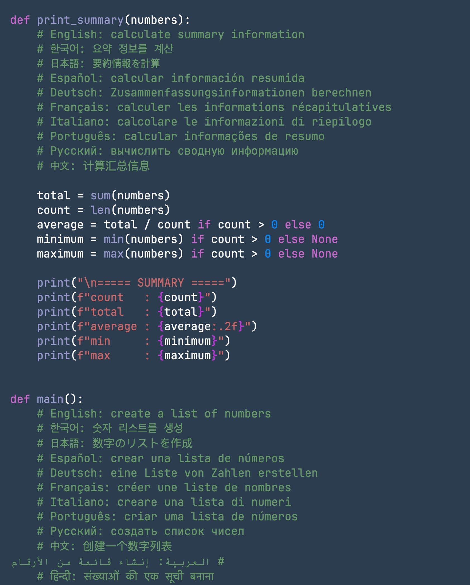

Immersion mode
Pull the interface away with Command + 1 when the document should take over the screen.

Latest release: v0.54.0
A quiet, native writing space for Mac.
Free, compact, and built with Swift so the interface can step back while your draft stays in focus.
Focused writing
Pull the interface away with Command + 1 when the document should take over the screen.
Zoom in, zoom out, or return to actual size without leaving the keyboard.
Bring back the sidebar and current line number only when navigation matters.
Major features
Typography
Large files
Export
Controls
Shortcuts
Demo
Clear the interface so only the document fills the screen.
⌘ + 1Zoom in, out, or reset with quick keyboard combos.
⌘ + / ⌘ − / ⌘ 0Toggle the current line number on and off.
⌘ + 3Show or hide the document sidebar without changing tools.
⌘ + 4Switch between JetBrains Mono, Fira Code, and UDEV Gothic while typing.
⌘ + 5Release
The latest public release is v0.54.0, published with Markdown and JS/TS parsing refinements, improved Python f-string highlighting, and enhanced C++ documentation highlighting.